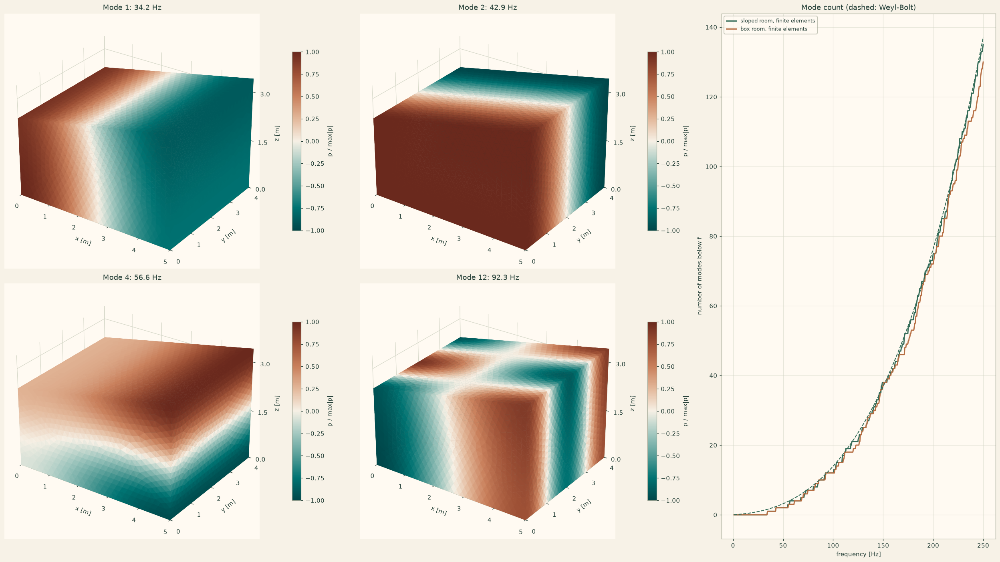
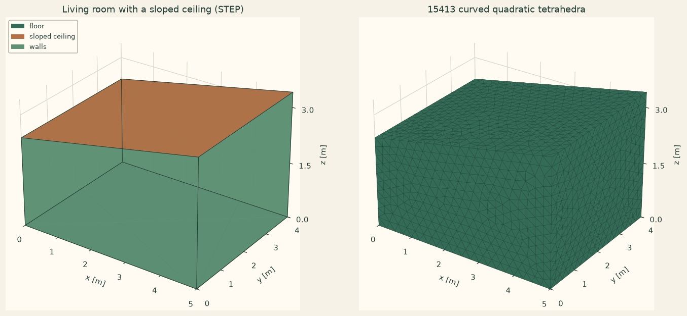

Docs › Examples › Eigenmodes of a room
Pressure acoustics, eigenmodes · 3D
Eigenmodes of a room
The standing waves of a 5 m x 4 m living room whose ceiling slopes from 2.4 m to 3.4 m, up to 250 Hz.

What it computes
OneSimulation reads the room and a plain box room from STEP files, assembles the Helmholtz stiffness and compressibility mass on curved quadratic tetrahedra and returns the lowest 150 modes with the pressure spectrum provider and a shift-and-invert Lanczos solver. The box room checks the solver against its exact modes; for the sloped room the mode count is compared with the Weyl-Bolt formula. The script that builds the STEP file comes with the notebook.
What it checks
All 130 modes of the box room below 250 Hz agree with the exact cosine modes to 1.8e-3; the modes of the sloped room change by at most 1.6e-3 between two meshes, and its mode count follows the Weyl-Bolt formula within 3 % from 150 Hz on (38, 74, 135 modes against 36.8, 76.4, 137.1 at 150, 200, 250 Hz).
Geometry
The notebook starts at the import of the CAD files room_eigenmodes.step, room_eigenmodes_box.step: STEP (AP242), readable by any CAD program, with the names of the faces that the boundary conditions use. Put them next to the notebook.

The geometry script
The script room_eigenmodes_geometry.py builds the geometry with the CAD objects of OneSimulation and writes the files. Change a dimension there, run it, and run the notebook again.
"""Geometry of the OneSimulation example "Eigenmodes of a room".
Builds the air of two rooms with the CAD objects of OneSimulation: a living room of 5 m x 4 m
whose ceiling slopes from 2.4 m to 3.4 m (room_eigenmodes.step, faces floor, ceiling, wall and the gable walls bottom and top),
and a plain box of 5 m x 4 m x 2.8 m used to check the solver against the exact modes
(room_eigenmodes_box.step).
"""
import numpy as np
from onesim.cad.d2 import Path, Profile, Segment
from onesim.cad.d3 import Box, Prism
length, width, low, high = 5.0, 4.0, 2.4, 3.4
section = Profile(Path((0.0, 0.0), (Segment((length, 0.0), name="floor"), Segment((length, high), name="wall"),
Segment((0.0, low), name="ceiling"), Segment((0.0, 0.0), name="wall"))))
room = Prism(profile=section, height=width).rotated((1, 0, 0), np.pi / 2).moved((0.0, width, 0.0))
room.save("room_eigenmodes.step")
Box(length=length, width=width, height=2.8).save("room_eigenmodes_box.step")The notebook
The complete notebook, cell by cell. Run it to produce the figures and the comparison printout.
At low frequencies a room sounds through its standing waves: some bass notes boom, others are weak, depending on where the eigenfrequencies fall. For rigid walls the modes solve
| boundary | condition | |---|---| | floor, walls, sloped ceiling | rigid, \(\partial p/\partial n=0\) |
The living room is 5 m long and 4 m wide; its ceiling rises from 2.4 m to 3.4 m along the length (\(V=58\) m³). A sloped ceiling has no closed-form modes.
References. A box room of \(L_x\times L_y\times L_z\) has the modes \(f_{lmn}=\tfrac c2\sqrt{(l/L_x)^2+(m/L_y)^2+(n/L_z)^2}\) (Lord Rayleigh, The Theory of Sound, §267), used here to check the solver. For any room shape the number of modes below \(f\) follows the Weyl-Bolt formula (H. Kuttruff, Room Acoustics, 5th ed., §3.3; R. H. Bolt, J. Acoust. Soc. Am. 10, 1939),
with the wall area \(S\) and the total edge length \(L\). Above the Schroeder frequency \(f_S\approx2000\sqrt{T/V}\) (M. R. Schroeder, 1962; \(T\) the reverberation time in s) the modes overlap and the room is described statistically.
import numpy as np
from onesim.cad.exchange import load
from onesim.meshing import TetrahedralMesher
from onesim.numerics.fem import FiniteElement, Lagrange
from onesim.numerics.linear import SparseSymmetricEigenSolver
from onesim.physics.acoustics import (AcousticPressureSpectrum, ComplexPressurePencil, ConstantPressureForms,
SampledPressureVolumeForms, pressure_space_volume_samples)
from onesim.visualization import theme, plots
theme.set()
c0, rho0 = 343.0, 1.204
top_frequency, mode_count = 250.0, 150Geometry and mesh
load returns the two rooms. Curved quadratic tetrahedra of 0.25 m (a fifth of the wavelength at 250 Hz) and, for the mesh study, 0.18 m fill them.
rooms = {"sloped room": load("room_eigenmodes.step"), "box room": load("room_eigenmodes_box.step")}
cases = (("sloped room", 0.25), ("sloped room", 0.18), ("box room", 0.25))
meshes = {(name, h): TetrahedralMesher(target_size=h, geometry_order=2).generate(rooms[name]) for name, h in cases}
room = rooms["sloped room"]
view = plots.Camera(elevation=28, azimuth=-55)
fig = plots.figure(1, 2, size=(15, 7))
plots.geometry(room, selection={"floor": room.boundaries.floor, "sloped ceiling": room.boundaries.ceiling,
"walls": room.boundaries.wall | room.boundaries.top | room.boundaries.bottom},
labels=False, camera=view, title="Living room with a sloped ceiling (STEP)", ax=fig[0])
plots.mesh(meshes["sloped room", 0.25], groups=("all",), legend=False, camera=view,
title=f"{meshes['sloped room', 0.25].cell_count} curved quadratic tetrahedra", ax=fig[1])
plots.show()Model
Quadratic Lagrange elements; SampledPressureVolumeForms integrates the stiffness and the compressibility mass, and AcousticPressureSpectrum returns the lowest 150 modes from a shift-and-invert Lanczos solver. The rigid walls are the natural boundary condition and need no term; the constant pressure at 0 Hz is the expected null mode of a closed room.
solver = SparseSymmetricEigenSolver()
def solve_room(name, h):
"""Lowest modes of one room on one mesh."""
mesh = meshes[name, h]
space = FiniteElement(element=Lagrange(order=2)).bind_space(mesh)
stiffness, mass = SampledPressureVolumeForms(size=space.dof_count, samples=lambda: pressure_space_volume_samples(space),
inverse_density=lambda omega, sample: 1 / rho0,
compressibility=lambda omega, sample: 1 / (rho0 * c0**2))(0.0)
eigenpairs = lambda operator: (lambda values, vectors: (np.sqrt(np.abs(values)), vectors))(
*solver(mass, operator(0.0).real, mode_count=mode_count + 1, target=-1.0))
modes = AcousticPressureSpectrum(operator=ComplexPressurePencil(ConstantPressureForms(stiffness, mass)), eigensolver=eigenpairs).run()
order = np.argsort(modes.eigenfrequencies)
return dict(space=space, mesh=mesh, dofs=space.dof_count, f=modes.eigenfrequencies[order], shapes=modes.pressure_modes[:, order])
runs = {case: solve_room(*case) for case in cases}Results
First the box room against its exact modes, then the sloped room: its lowest modes, the mesh study, and the mode count against Weyl-Bolt.
box = runs["box room", 0.25]
dimensions = (5.0, 4.0, 2.8)
exact = np.sort([c0 / 2 * np.sqrt((l / dimensions[0]) ** 2 + (m / dimensions[1]) ** 2 + (n / dimensions[2]) ** 2)
for l in range(12) for m in range(10) for n in range(8)])[:mode_count + 1]
below = exact < top_frequency
print(f"box room ({box['dofs']} unknowns): null mode {box['f'][0]:.1e} Hz; {np.count_nonzero(below) - 1} modes below "
f"{top_frequency:.0f} Hz, largest relative frequency error {np.max(np.abs(box['f'][1:][below[1:]] / exact[1:][below[1:]] - 1)):.1e}")
coarse, fine = runs["sloped room", 0.25], runs["sloped room", 0.18]
print(f"sloped room: {coarse['dofs']} and {fine['dofs']} unknowns; largest change of the modes below {top_frequency:.0f} Hz "
f"between the meshes {np.max(np.abs(coarse['f'][1:] / fine['f'][1:] - 1)[fine['f'][1:] < top_frequency]):.1e}")
print("lowest modes of the sloped room [Hz]:", ", ".join(f"{f:.2f}" for f in fine["f"][1:13]))
print("the same in the box room [Hz]: ", ", ".join(f"{f:.2f}" for f in box["f"][1:13]))
volume, area = 5.0 * 4.0 * 2.9, 2 * 5.0 * 2.9 + 2.4 * 4.0 + 3.4 * 4.0 + 5.0 * 4.0 + np.hypot(5.0, 1.0) * 4.0
edges = 2 * (5.0 + np.hypot(5.0, 1.0) + 2.4 + 3.4) + 4 * 4.0
weyl = lambda f: 4 * np.pi * volume * f**3 / (3 * c0**3) + np.pi * area * f**2 / (4 * c0**2) + edges * f / (8 * c0)
print(f"\nV = {volume:.1f} m3, S = {area:.1f} m2, L = {edges:.1f} m")
print(" f [Hz] modes below f, sloped room Weyl-Bolt deviation")
for f in (100, 150, 200, 250):
count = np.count_nonzero(fine["f"][1:] < f)
print(f"{f:7d} {count:26d} {weyl(f):9.1f} {100 * (count / weyl(f) - 1):+.0f} %")
print(f"Schroeder frequency for a reverberation time of 0.5 s: {2000 * np.sqrt(0.5 / volume):.0f} Hz")Figure
Four modes of the sloped room on its walls, floor and ceiling (teal and copper are opposite signs), and the mode count against the Weyl-Bolt formula.
points = np.asarray(fine["mesh"].coordinates)
surface = np.asarray(fine["mesh"].facets(room.boundaries.all))
shown = (1, 2, 4, 12)
fig = plots.figure(layout=[["m0", "m1", "count"], ["m2", "m3", "count"]], size=(20, 11))
for panel, k in zip(("m0", "m1", "m2", "m3"), shown):
shape = np.asarray(fine["space"].evaluate(fine["shapes"][:, k], points))
plots.trisurface(points, surface, shape / np.max(np.abs(shape)), colormap="diverging", limits=(-1, 1), camera=view,
label="p / max|p|", title=f"Mode {k}: {fine['f'][k]:.1f} Hz", ax=fig[panel])
grid = np.linspace(1.0, top_frequency, 500)
plots.line(grid, {"sloped room, finite elements": np.array([np.count_nonzero(fine["f"][1:] < f) for f in grid]),
"box room, finite elements": np.array([np.count_nonzero(box["f"][1:] < f) for f in grid])},
reference={"sloped room, finite elements": weyl(grid)},
xlabel="frequency [Hz]", ylabel="number of modes below f", title="Mode count (dashed: Weyl-Bolt)", legend="upper left",
ax=fig["count"])
plots.show()Going further
Move a wall in room_eigenmodes_geometry.py and write the STEP file again to see how the bass modes shift; or put an absorbing carpet on the floor as an admittance boundary (PressureAdmittanceBoundary) and compute the complex modes with the contour eigensolver - their imaginary parts are the decay rates that set the reverberation time.